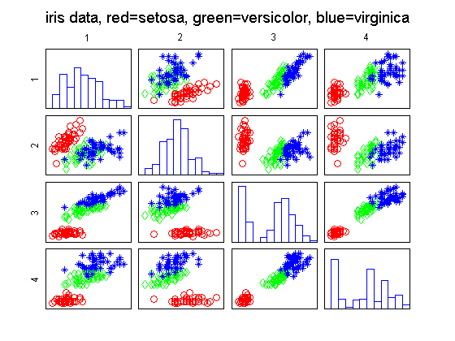
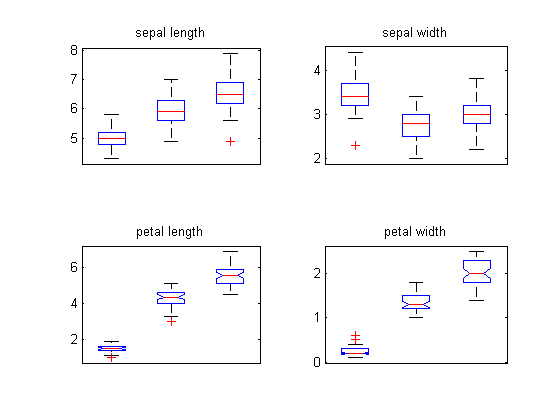
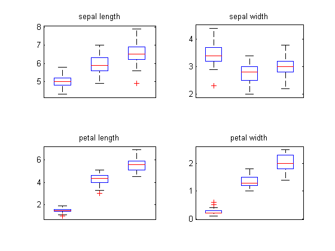

Fisher Iris Data Visualization Demo
[X,y,classnames,varnames] = fisheririsLoad;
figure(1);clf
pscatter(X,'y', y);
suptitle(sprintf('iris data, red=setosa, green=versicolor, blue=virginica'));
printPmtkFigure fisherIrisPairs
figure(2);clf
for dim=1:4
subplot(2,2,dim)
if dim<=2
boxplot(X(:,dim), y, 'notch', 'off');
else
boxplot(X(:,dim), y, 'notch', 'on');
end
set(gca,'xticklabel',classnames);
xlabel(''); ylabel('');
title(sprintf('%s', varnames{dim}))
end
printPmtkFigure irisBoxNotch
figure(3); clf
for dim=1:4
[n d] = size(X);
C = length(classnames);
XX = NaN*ones(n,C);
for c=1:C
ndx = find(y==c);
XX(1:length(ndx), c) = X(ndx, dim);
end
[n d] = size(X);
subplot(2,2,dim)
boxplot(XX)
set(gca,'xticklabel',classnames);
xlabel(''); ylabel('');
title(sprintf('%s', varnames{dim}))
end
plotsymbol =
'ro' 'gd' 'b*' 'k+'
  